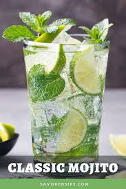

Finally! Here is an Odin Recipe for a Classic Mojito!
Use the freshest mint you can find. If your mind is wilted you can try resuscitating it in a bowl of ice water for ten minutes. That usually perks it back up. Save the most beautiful sprigs for your garnish."